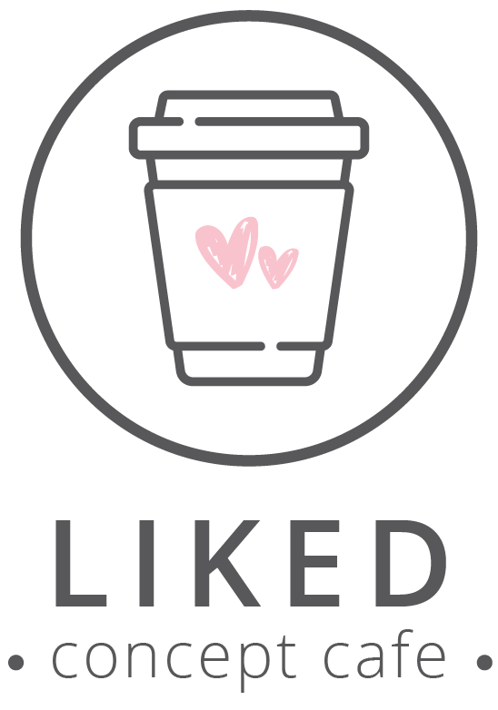
This week I continued working on updating this archive/documentation site. I want to transfer the weekly blog posts I have been doing in the official Capstone class blog to this site to have a full archive of my project. Although I already have most of the content, it is still a lengthy process to edit the text and align all the images and videos on the site. So far, I have fully transferred Week 7 to the website and my goal is to transfer the rest of the weeks by next Tuesday. In addition to working on the archive, I also updated my Capstone budget to meet the new needs of the online presentation format. I will send this budget to Aaron for approval to finish working on the exhibition layout renders with more professional stock vectors.
Lastly, I also created a Google Developer account to hopefully publish my extension on the Extension Store and familiaried myself with the tutorial on how to do it. I still have couple of tweaks that I want to do with the extension but once they are done, I will try publishing the extension to make it more easily accessible. I have also started working on the paper to finish a draft in the upcoming week and a half.
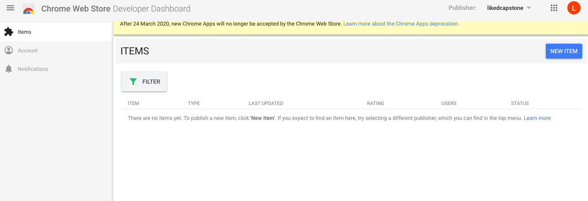
During the break I continued polishing the design elements such as the logo, the brochure and the Instagram background wall. The goal was to make them more unified because thus far the line art of the logo was not entirely consistent with the softer pink textures inside the brochure. Therefore, I incorporated the pink squiggly hearts within the logo and made the inside of the brochure use more of the line graphic style from the logo. At this point I am mostly done with the design elements and can concentrate on the rest of the tasks. I also updated this archive/documentation website to be in line with the new design. Now that it is up and working, I will be posting the weekly updates here as well as start the documentation of my project.
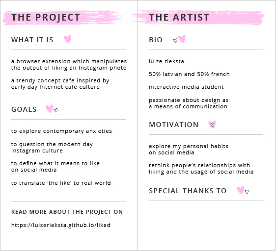
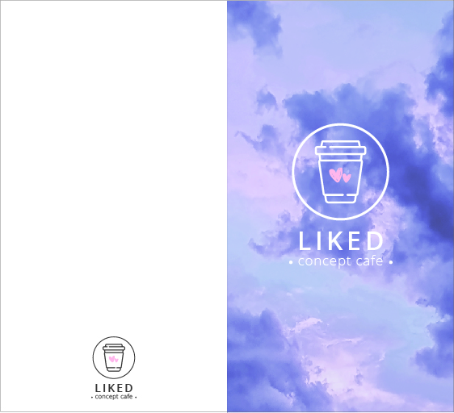
Regarding the direction the project will take after the announcement about not being able to do a physical exhibition, I have decided to fully move my project online. After consulting with my advisor we pinpointed two main reasons for this decision. Firstly, the extension itself is already online and can exist fully in an online medium without any additional changes. Secondly, it is not possible anymore to fabricate the assets needed for a physical exhibition. Without assets such as the countertop, the walls and even a real window it seemed like the essence of the interior design was lost. Besides, as there would be no people able to attend the temporary mounted exhibition in the Capstone studio at NYUAD, it also would not be possible to get physical participation in the space which was essential for such activities as taking photos of the Instagram wall or putting heart stickers on objects in the space.
However, I am still very much attached to the idea of the Instagram café and the design that I had planned. As I already had most of the design elements finished prior to the announcement about the exhibition, I would still like to use them, just in a different form. The solution that I came up with is creating some high quality 2D renders of what the exhibition space was supposed to look like and create a detailed guide of the space within the documentation section of this website. The documentation would include all the digital assets and renders of the space with a purpose to be able to recreate such a space at a time when making physical exhibitions is possible again. Therefore, it was important to work on this website over the break as it will become the main place where my Capstone project will live.
In the past week I first met up with the Capstone Seminar advisor Aaron, and he helped me to figure out how to limit the output of the extension to just one action per image instead of everything (posting a comment, erasing likes and appending text) happening at once. We also altered the window.scroll() function in the code to only look for scrolling when it occurs and not all the time, which significantly improved the functionality of the extension. I then showed my extension to a couple more people and gathered their feedback to have a clearer idea of how to improve my project. Based on my users’ feedback I worked with randomizing the output of the extension in order to not have something happening every time that a photo is liked. My users also recommended to increase the chance of a comment being posted, as they said it seemed the most realistic and unsettling output. Therefore, I worked with the code to try to control the randomness so that posting a comment happens the most often. Appending text on the image happens the least frequently, as it is the most apparent action and causes the user to really slow down and think about what happened previously and what will happen when liking the upcoming images. This is a demo of my extension which I also showed in the Midterm presentation to the Interactive Media faculty at NYUAD:
Besides from working on the extension, I also kept working on the visual materials for the display purposes of my project. I communicated with NYUAD's design instructor Erin and received more feedback on the visual elements and updated them based on the feedback. The idea was to move away from an Instagram-specific aesthetic (therefore I removed the Instagram-inspired gradient from my graphics) and adapt to a more universal aesthetic that could apply to social media in general. Thus, I updated the brochure/menu, the Instagram background wall for the cafe, created a logo and the design for sticker sets. I also created a mock-up plan of the frontal view of the imagined exhibition space.
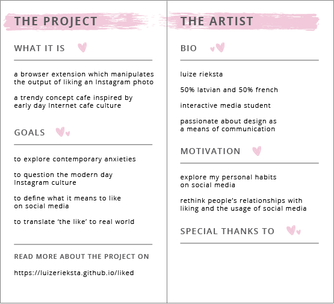
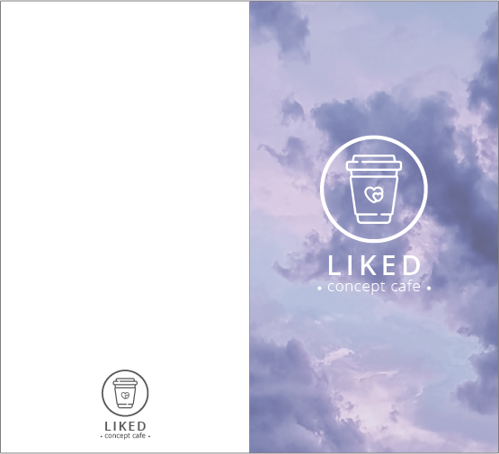
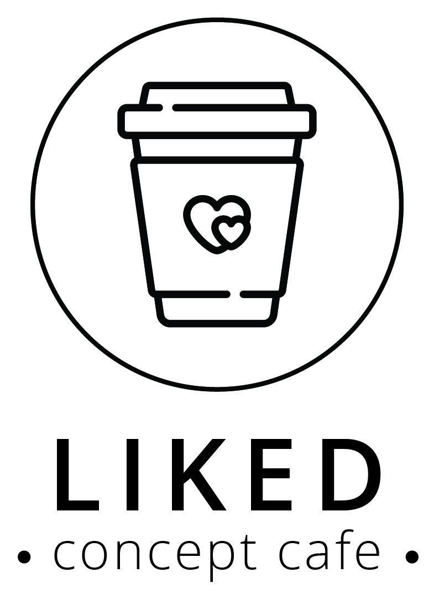

This week started with a helpful meeting with the Capstone Seminar advisor Aaron after which I managed to fix two of the most pressing issues which didn't allow me to move on to the user testing phase, as they were significantly affecting the usability of my extension. The first issue was posting a comment once a photo has been liked and posting it in the right place on the site. At first, I was having issues with the new comment only replacing the existing last comment. I decided that I wanted to ideally target the whole comment box and not just the last comment in order to make it more noticeable to the user that a new comment has been appended and the others have been deleted. The other issue was the extension becoming very slow and laggy. This issue had to do with the setInterval() function I was using, as it was calling all functions in the code many times, therefore slowing down the extension overall. Aaron suggested changing setInterval() to window.scroll function, as I still needed something that would track scrolling and be called again once new posts are loaded to avoid the issue of the extension only working on initial page load. Window.scroll helped solve the extension being slow, however, a new issue arose which is other functions that are within window.scroll being called multiple times. Therefore, the randomizer, which should select one number to call one of the functions, chooses several numbers because it is called several times, thus calling several functions. Now I need to make sure that the randomizer works properly so that I can have just one function being called at once.
Here is a video of being able to post a comment in the proper place:
Besides fixing some of the issues, I also introduced a new functionality which is erasing all the likes on a post. I also got rid of the Instagram error message that was appearing for the past few weeks.
From a technical point of view, I dedicated almost all of the past week trying to increase the functionality of my extension. I was concentrating on adding a new function which enables to “post” a comment from the user's account when an image is liked. After talking to the Capstone Seminar advisor Aaron last week I managed to figure out how to inject several html elements at once which was useful for adding a comment on the page, as one single comment consists of several html lines such as the username, the text itself, the small like button, etc. All of these elements need to be a part of the same classes as the original Instagram comments in order for the new injected comment to look authentic.
After figuring out how to add a comment on the page I ran into the same issues I was having in the first weeks with adding a string on an image. The comment would post on all images instead of just the one that has been liked. The same solution that worked for adding the text wouldn't work with comments because in the case of appending text I would check whether the div that contains the image is liked and then append text to the same div because I wanted it to be on top of the same image. In the case of appending text the Javascript “this” worked because the function is appending the text to the current div element that is liked which is essentially the same div as the image itself. However, in the case of adding a comment the comment section div is not part of the same div as the image. Therefore, I couldn't write a function that would append a comment to the current image in the same way.
Instead, I checked for when the whole article is double clicked, because both the image and the comment section is part of the article. I then specified that my comment should be appended to the respective child of the article. The child div that I am targetting is the comment box div. However, I ran into some issues because ideally, I would like to replace the whole comment section with just my comment or, if there is no comment there, just add my comment. However, I couldn’t access that particular child div with Javascript’s this() and next() and could only manage to find a way to replace the last existing comment. This function works most of the time, however, I am having issues because sometimes the last comment just doesn't get replaced and I can't seem to figure out why. Another issue that I am having and I am not sure how to solve is that sometimes my extension noticeably slows down.
Here is an example of the comment replacement working well:
Here is an example when comment replacement doesn't work:
Besides the technical aspects I also continued working on the exhibition design. I created another and more detailed moodboard for the layout and details of the space to think more specifically about how it would look. I also started working on the brochure design of the exhibition to help further develop the identity that I want the space to encompass. The brochure will be in a form similar to a café menu as my project space will represent a modern-day internet café.

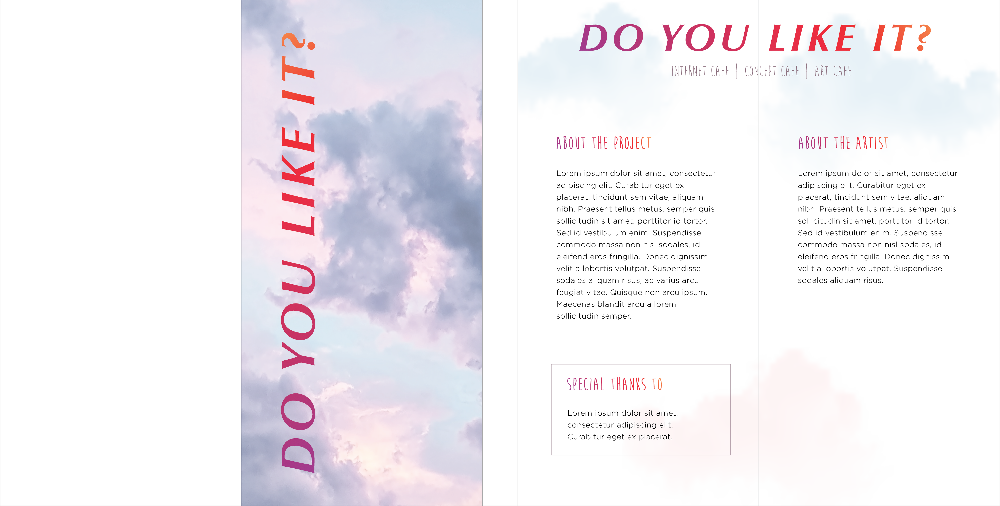
This week I continued working on the code for the extension to add more functionality to it, as well as I started making a website for documenting my Capstone project and a moodboard with ideas for the set-up of the exhibition.
In terms of functionality, I randomized the messages that appear on the image after liking it so that it is a random string from an array of strings every time that the image is liked. Currently I only have 4 different message options, however, now I have the mechanism ready to keep adding new strings to the array and one will be randomly appended to the image. I will add new message options in the upcoming week, however, I think that user testing will also play a big role in determining what messages to include in the array, as I will listen closely to the users’ feedback about what they find more impactful. The last step will be to add proper styling to the text messages so that they look visually appealing and then this part of the extension will be completely finished.
I also worked on making the like count go to zero on each image separately after double clicking it, however, I didn't manage to properly execute it, and it still only happens on the first post of the site. I tried using a similar logic as with appending text to particular images, however, I couldn't get it to work. Also, although the class name of the element that the like count is a part of is the same for all images, my code still only recognizes the like count on the first image. I will talk about this issue to Aaron. Another functionality that I started working with is having a comment appear below a post that is liked but I also need to talk to the Capstone Seminar advisor Aaron about it.
Lastly, I started coding a website for the documentation of my project. I created the home page which is in line with the theme that I want my project to have – Instagram-inspired color palette and elements. I will start adding the progress reports on the website starting from next week (I will also make a summary about all the progress so far) and it will be under the ‘development’ button. Here is a screenshot of the home page:
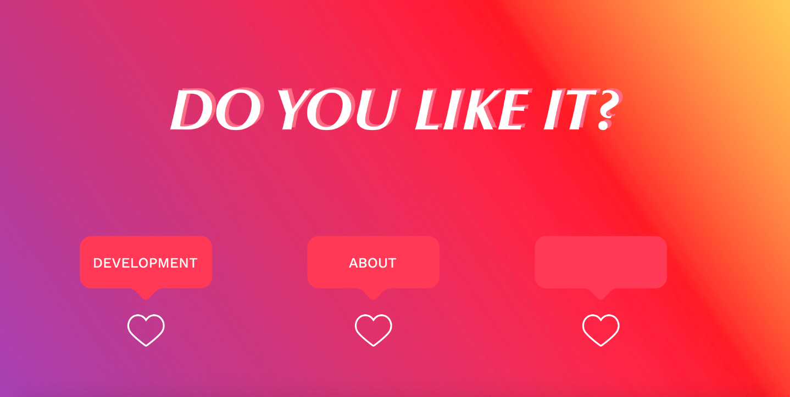
Finally, I also started to carefully think about the presentation and set-up of my exhibition. I created a moodboard which contains ideas on the layout, attributes and style. The idea is to have a sort of Internet Café setting meaning that all the computers will be placed on desks and separated from each other with cubicles. However, I might position the cubicles close enough to each other so that there is a possibility of seeing what other people are doing on their computers. The style of my Internet Café will also be much more modern than those of a long time ago: the desks will have such decorations as coffee mugs, magazines and plants to make it look more “trendy” and modern. I also want to decorate one wall with either some wall art, neon lights, plants or something similar to make it the “Instagrammable corner” like in many cafés nowadays. Therefore, the overall setting would be inspired by the older Internet Cafés but in reality, it would be adapted to the much more modern and “cool” lifestyle that Instagram often promotes. The metaphor behind the Internet Café is that people used to go there to seek privacy, however, can one really be private when using the Internet? Besides, there is always the risk of being seen (which I might emphasize even more if I place the cubicles so that it is possible to see other computers). Therefore, the setting would represent the anxious feeling that one might get from using the extension because what they are really anxious about is how they would look in other Instagram users' eyes. Similarly, in the actual exhibiton setting there would be the sense of others’ presence and them possibly seeing what you do on Instagram.

This week I was working on two main things for my Capstone Project. Firstly, I wanted to fix the issue of liking one photo but the action being executed on all photos, not just the one that was liked. In my opinion, this was the problem that limited the usability of my extension the most, as the extension could only work on one image and the user would need to refresh the page every time in order to use it again. I experimented with Instagram's DOM and trying to understand the relations of its elements. Eventually I ended up using Javascript's 'this' in order to retrieve the unique element of each post, and it solved the issue. I am now able to use the extension to like an image and display a text on top of that image, and it only happens on that particular image. For now, the functionality is only limited to displaying text on top of the image and I will keep working to use the same principle to execute other actions as well (i.e. make the like count go to zero only for that image, post a comment only for that image, etc.).
The second thing I worked on this week was fixing the scrolling issue which I had had ever since I started working on the extension. After several unsuccessful attempts in the past weeks by approaching the issue strictly from a scrolling point of view, I kept looking for ways how this issue could be solved differently. I decided to try calling the function, which is responsible for actions as displaying text on the image when the picture is liked, multiple times instead of just once on the initial page load. For this I found the setInterval() function helpful, as it allowed me to set a time interval for how often the function is called. I set it to 10 milliseconds which means that the function is almost constantly being called. As it is impossible to scroll down to new posts in less than 10 milliseconds I find this solution to be working very well, because now the extension works throughout the whole site (also when scrolling back up which was previously an issue).
After the two most recent fixes I started getting a new error message from Instagram not just in the console but also the site itself. Instagram doesn't allow me to like images anymore, as it displays this error image:
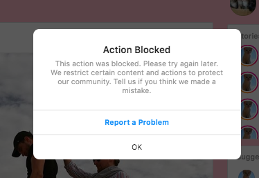
For the upcoming weeks, I will work on introducing more functionality when liking an image which would also happen exclusively on the image that is liked. Building up from last week and the work I did with Instagram video posts, I will also introduce actions happening when pressing the like button and not only when double clicking the image. I started doing it this week but it turned out to be a little more challenging and it will need some more time.
Besides working on the technical part of the extension, I will also start working on the archive documentation website for my project where I will post the updates on the production process. I will also start gathering visual references for making a moodboard for the design and layout of the exhibition space itself.
Working Title: “Do you like this?”
This week I have kept working on developing my Instagram Chrome extension and attempting to solve some of the issues that I ran into throughout J-term. I spent time trying to figure out how I could fix the issue with scrolling where my extension doesn’t work when I scroll down Instagram and new photos load, as it only replaces the photos that had loaded on the initial page load. I tested out this extension on different sites to see whether it is just an issue with Instagram or also other websites. I tried it on such sites as Google, BBC and others and understood that the issue was most definitely with new images loading after scrolling, as it works very well on a more static site.
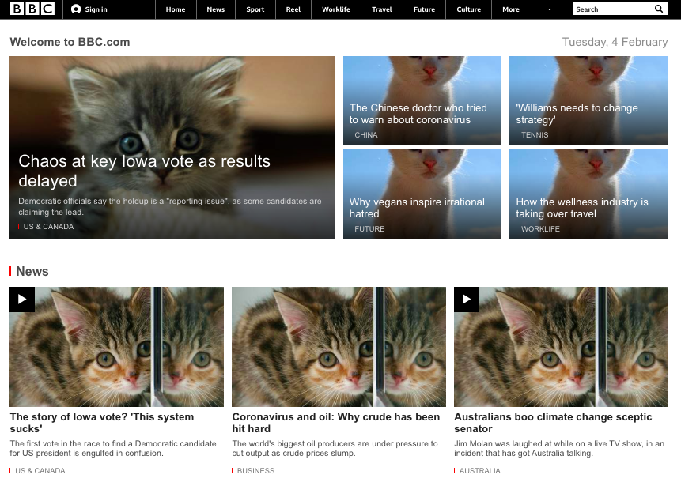
My attempts to fix this were unfortunately unsuccessful and I could not find any supporting documentation about this issue from the Chrome’s developer guide: https://developer.chrome.com/devguide
I will try to figure out a way to have the extension work whenever something new loads on the page and also talk to someone with experience in extension creation, as this seems like a more and more Chrome specific issue.
Besides scrolling, I also worked on identifying videos on Instagram as they have to be treated differently from photos. Firstly, they are part of a different class and also double clicking doesn't work to like a video on the Web version (it works on the app though). Double clicking simply plays and pauses the video, therefore, the only option to like a video on Web Instagram is by clicking the like button. Therefore, I worked with accessing the heart button element and doing the same actions as last week such as displaying text or making the like count go to 0 when the button is clicked instead of double clicking. This is very helpful for the further development of the extension as well, as I need to introduce this possibility also for images, as users could potentially also use the actual like button instead of double clicking in order to like an image.
In the upcoming week I will keep working with the extension – especially trying to make better sense of the error messages. Some examples I have gotten over the weeks are these (they are not always there and not always the same):
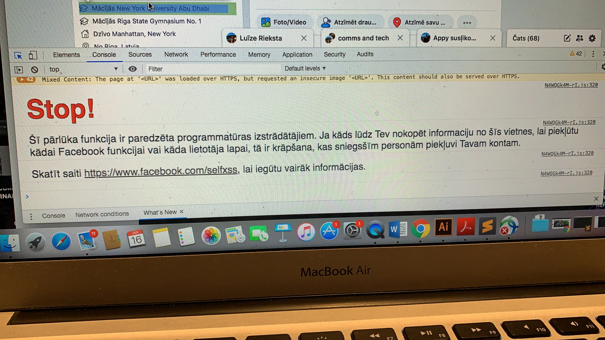
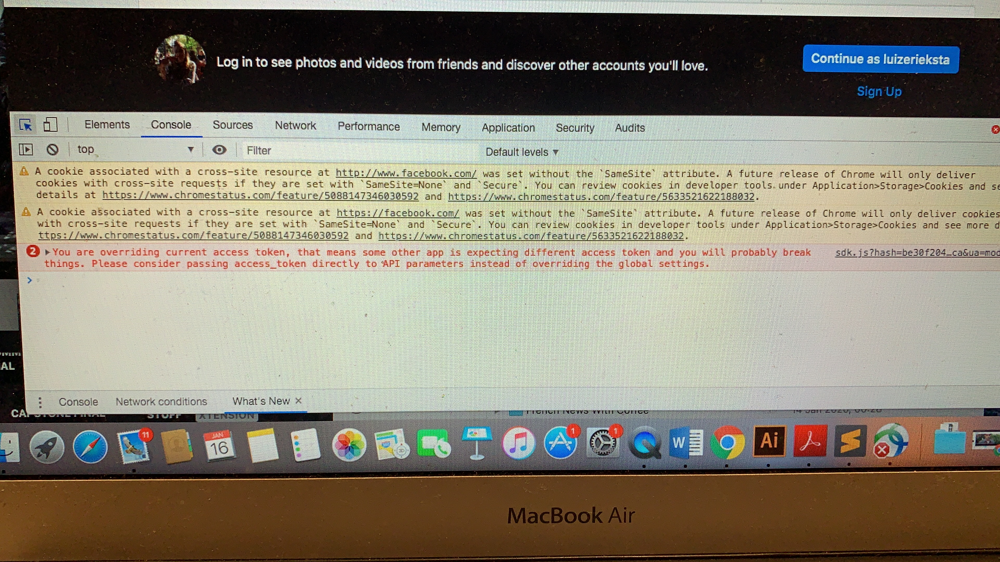
Over the break I started actively working on developing the Chrome Extension for manipulating the way how Instagram behaves when the user likes a picture. I started with web scraping to understand how Instagram is built and how it is possible to access some of its elements such as the background, the images, the like button, etc. I then tried out changing these elements directly in the console by replacing them or manipulating them in other ways.
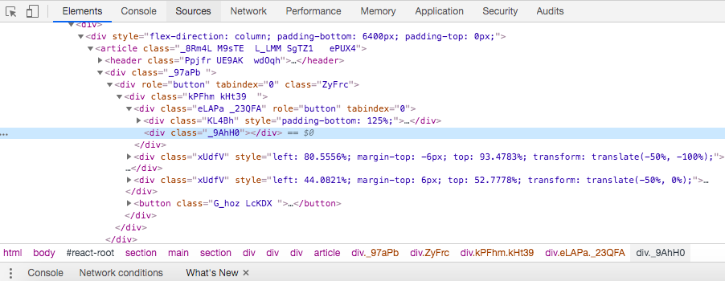
After trying to access the elements and manipulating them in the console I began doing extensive research on how Chrome extensions are built and how they function. I read many guides about different extensions, especially those manipulating the html and css of a page, as it is what I want to do in my own extension. I then built my very first extension which I kept simple, as it was supposed to replace certain words or images from the page with something different. I experimented with how extensions work on different sites and quickly began to realize that Instagram might be harder to manipulate than other websites. For example, when running an extension to replace all images on the site with kitten images, Instagram only does it partially (the main images that people post in the feed are not replaced, although the images appear to be part of an image tag in the source code) but other sites (even Facebook) replaces all of the images on the site. Another issue that I have identified is once you scroll further down, the extension stops working as it only replaces the images or words from the top of the page.
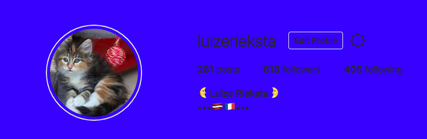
I then started building my actual Capstone extension. My goal was to achieve my initial idea which is to show a string of text on an image after pressing the like button. After many trials and errors, I managed to achieve a somewhat version of this goal. Currently, when liking an image there is a text that appears, however, it also happens on other images of the website. I have been trying to figure out how to only access that particular image of that div where the like button is pressed, however, I haven’t yet managed to do it, as I can’t seem to access the child nodes of that div, although, they should technically be there. Also, after interacting with Instagram when using the extension, I have also discovered that videos should be treated separately from images, as the same code doesn’t work with them. The other ongoing issue is with the scrolling and the extension not working throughout the whole site, which I am still trying to fix.
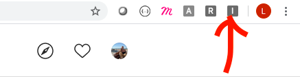
However, by working on the extension, I have also tried many other things along the way. For example, I made an example of changing the like number to 0 after liking an image. Another example is making the image disappear after liking it. In the next weeks, my main goal is to make the extension fully functional which includes fixing the larger issues that I have encountered along the way. Afterwards, I want to start including more functionality and interactivity and start actively user testing the extension to gain as much feedback as possible.